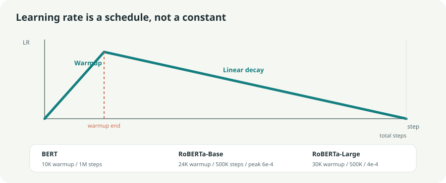

1. Adam 如何更新参数
梯度下降使用当前梯度更新参数；Adam 则为每个参数维护梯度的一阶矩和二阶矩的指数移动平均。一阶矩估计梯度方向，二阶矩估计梯度平方的尺度。对参数 θ，在第 t 步的梯度为 g_t：
由于初始矩估计从 0 开始，需要 bias correction：
Adam 通过参数级自适应缩放改善了不同参数梯度尺度差异，但它不会自动解决所有优化问题。学习率仍然控制整体更新量；batch size 决定梯度估计噪声；训练步数决定总预算；warmup 和 decay 则决定这些更新量如何随训练阶段变化。
2. AdamW：把权重衰减从梯度矩估计中分离
把 L2 正则项 λ||θ||²/2 加进损失，会使梯度变成 g_t+λθ_t。对 Adam 这类自适应优化器，正则项也会进入一阶和二阶矩估计，导致其作用受到自适应预条件影响。
AdamW 将 weight decay 与梯度更新解耦。忽略实现中的参数组差异，更新可写为：
权重衰减是对参数本身施加收缩，而不是把 λθ 先混入梯度矩估计。现代微调常对 bias 和 LayerNorm 参数设置 weight_decay=0；这是一种常见参数分组实践，具体是否使用应与复现的训练代码一致。
原始 BERT 论文报告 Adam 与 0.01 weight decay；Google 参考实现使用自定义 AdamWeightDecayOptimizer，并对 LayerNorm 与 bias 做排除。复现 BERT 时不能只凭论文中的“Adam”两个字，就假设任何框架里的默认 Adam 参数完全相同。
3. Warmup 与线性衰减：让更新尺度随训练阶段变化
预训练初期，模型参数、LayerNorm 统计和 Adam 的矩估计都处于快速变化阶段。Warmup 从较小学习率逐步升到峰值，减少训练刚开始时的大幅更新；随后线性衰减把学习率逐步降到接近 0。

调度器应按 optimizer update step 计数。若使用梯度累积，micro-batch 前向次数会多于 optimizer 更新次数；把两者混淆会让 warmup 结束得过早或过晚。
4. BERT 原始预训练配置
| 超参数 | BERT 原始论文配置 | 意义 |
|---|---|---|
| Optimizer | Adam（官方代码为 AdamWeightDecayOptimizer） | 自适应一阶/二阶矩更新 |
| β₁ / β₂ / ε | 0.9 / 0.999 / 1e-6 | 矩估计衰减与数值稳定项 |
| Peak learning rate | 1e-4 | 预训练峰值学习率 |
| Warmup | 10,000 steps | 随后线性衰减 |
| Batch | 256 sequences | 不是 256 tokens |
| Total steps | 1,000,000 | 训练预算 |
| Weight decay | 0.01 | 论文报告值 |
| Sequence length | 前 90% steps 为 128；最后 10% 为 512 | 降低长序列阶段的总计算成本 |
| Dropout | 0.1 | 各层的正则化配置 |
原始 BERT 先用较短的 128-token 序列训练大部分步骤，最后 10% 再切换到 512-token 长序列。只看“batch 256、max length 512”会误以为所有训练步骤都使用最大长度，进而高估 token/step 与计算预算。
5. RoBERTa 原始预训练配置：Base 与 Large 不同
| 超参数 | RoBERTa-Base | RoBERTa-Large |
|---|---|---|
| Layers / Hidden / Heads | 12 / 768 / 12 | 24 / 1024 / 16 |
| Peak learning rate | 6e-4 | 4e-4 |
| Batch size | 8K | 8K |
| Warmup steps | 24K | 30K |
| Max steps | 500K | 500K |
| β₁ / β₂ / ε | 0.9 / 0.98 / 1e-6 | 0.9 / 0.98 / 1e-6 |
| Weight decay | 0.01 | 0.01 |
| LR decay | Linear | Linear |
RoBERTa-Large 的 peak LR 是 4e-4，Base 是 6e-4；不能把其中一个值写成整个 RoBERTa 家族的唯一学习率。RoBERTa 论文还报告 gradient clipping=0.0，即其表格中的该配置没有使用梯度裁剪。
6. 有效 Batch、token 数与更新步数
有效 batch 由每设备 micro-batch、设备数量和梯度累积步数共同决定：
若每条序列平均包含 L 个有效 token，那么每次更新处理的 token 数约为 B_eff×L。比较 batch 时，必须同时说明“序列数”还是“token 数”，因为不同训练阶段的平均长度可能不同。
总更新步数可由训练样本数、有效 batch 和 epoch 数估算；预训练若按 token budget 训练，则更适合用总 token 数除以每步有效 token 数来规划。数据重复采样、drop_last、动态 batch 和多任务采样都会改变精确值。
7. 微调超参数：小数据集要搜索，不要迷信默认值
原始 BERT 的 GLUE 微调在 5e-5、4e-5、3e-5、2e-5 中选择学习率，batch size 为 32，训练 3 epochs，并按 Dev 集选择。RoBERTa 的微调表格对不同任务使用不同搜索空间，例如 GLUE 学习率 1e-5、2e-5、3e-5，batch 16/32，warmup ratio 0.06，最多 10 epochs；SQuAD 和 RACE 又有不同配置。
这些是论文各自的实验设置，不是所有任务的通用最佳值。对于小数据集，应先固定数据切分，再用验证集选择学习率、epoch、weight decay 和 warmup；如果结果对随机种子敏感，报告多种子均值和标准差。不能用 test set 挑选超参数。
7.1 Layer-wise learning-rate decay 是可选策略，不是 BERT 原始默认值
Layer-wise learning-rate decay（LLRD）为不同 Transformer 层设置不同学习率，常见做法是让靠近输入的层使用较小学习率。它是一种后续微调启发式，不是 BERT 原始预训练配方。RoBERTa 论文明确说明其微调使用所有层相同学习率，而 XLNet 使用了层级学习率策略。使用 LLRD 时应记录衰减系数、层分组方式，并通过验证集确认是否有收益。
8. 可复现实验协议
- 记录模型与 tokenizer 的 checkpoint、revision、词表哈希。
- 记录 train/validation/test split 的样本 ID 和文档分组规则。
- 记录 optimizer 类型、β 参数、ε、weight decay 参数组、peak LR 和 scheduler。
- 记录 per-device batch、设备数、gradient accumulation、有效 batch 和总 optimizer steps。
- 记录序列长度、padding/truncation、混合精度、梯度裁剪与随机种子。
- 保存验证集模型选择规则、最终测试指标、训练日志和软件版本。
9. 交互：选择训练阶段，查看对应配置
训练配方速查
选择一个实验设置，查看论文参数和需要避免的误读。
Optimizer：Adam / 官方实现 AdamWeightDecayOptimizer Peak LR：1e-4 Batch：256 sequences Steps：1,000,000；warmup 10,000 Length：90% steps 使用 128，最后 10% 使用 512 提醒：256 是序列数，不是 token 数。
关键结论
- Adam 维护一阶与二阶矩；AdamW 把 weight decay 从自适应梯度矩估计中解耦。
- Warmup 与线性衰减按 optimizer update step 运行；梯度累积时不能把 micro-batch 数当 scheduler 步数。
- BERT 与 RoBERTa 的学习率、batch、warmup 和总步数差异很大；RoBERTa Base 与 Large 的 peak LR 也不同。
- 微调超参数要用 validation 选择；test 不参与调参；小数据集需要报告多随机种子。
- LLRD 是后续可选启发式，不是 BERT 原始默认配方。
原始资料与延伸阅读
- Kingma & Ba, Adam: A Method for Stochastic Optimization, §Algorithm 1。
- Loshchilov & Hutter, Decoupled Weight Decay Regularization。
- Devlin et al., BERT, Appendix A.2 and A.5；Google optimization.py。
- Liu et al., RoBERTa, Appendix B Tables 9–10。
- Hugging Face, Optimizer schedules。